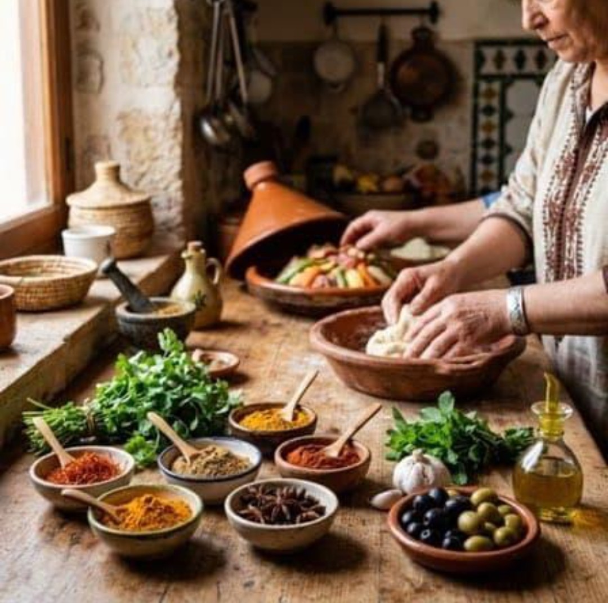
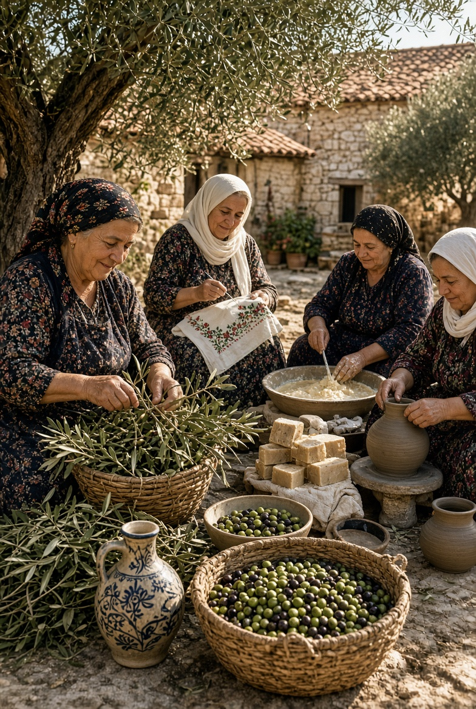

Une coopérative au cœur du Rif Thimdrine est une coopérative de 25 femmes de la région de Nador, unies par leur passion pour les produits du terroir et leur attachement aux traditions du Rif. Nous proposons des produits authentiques, préparés avec soin, comme le miel de thym, l’huile d’olive et la confiture de figues de Barbarie.
Un savoir-faire transmis avec passion Née de la volonté de valoriser les richesses de notre région, la coopérative Thimdrine met en avant le savoir-faire des femmes du Rif. À travers nos produits, nous souhaitons faire découvrir les saveurs de notre terroir et préserver les traditions qui font la richesse de notre patrimoine.


Un travail soigné, une qualité préservée Nous prenons soin de chaque étape de notre production afin de préserver la qualité de nos produits et de vous offrir le meilleur de notre terroir.